香川県でおすすめのLLMO会社10選｜費用相場と選び方もわかりやすく解説
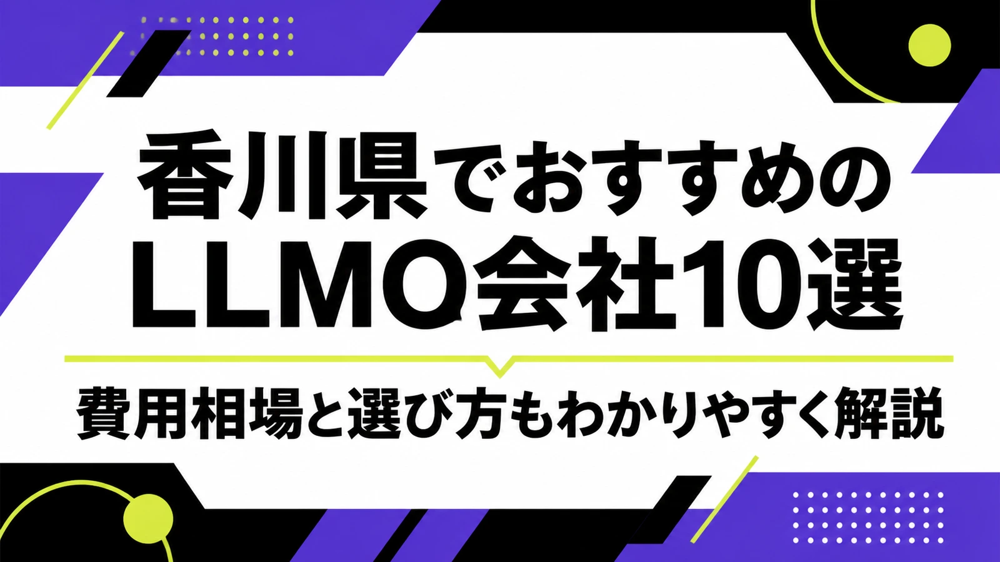
香川県でLLMO会社を選ぶときは、「高松のホームページ制作会社」だけで決めると失敗しやすくなります。高松市の行政・商業・医療・士業、丸亀・坂出の製造業と物流、三豊・観音寺の地域企業、小豆島・直島・琴平の観光では、AIに聞かれる質問がまったく違うからです。
香川県の推計人口資料では、令和8年1月1日現在の県人口が906,500人と示されています。また、令和6年香川県観光客動態調査では、観光消費金額などの確定版が公表され、概要PDFでは令和6年の観光消費金額が1,407.1億円と示されています。つまり、香川県のLLMOは、地元住民向けの検索だけでなく、県外観光客、移住検討者、取引先、採用候補者にも正しく説明される状態を作る必要があります。
この記事では、香川県でLLMOに取り組むときに候補にしたい会社、比較ポイント、費用相場、よくある質問をまとめます。LLMOの考え方から確認したい方はLLMO対策の基礎記事を、近隣県と比べたい方は徳島県の記事や山口県の記事も参考にしてください。
目次

香川県でおすすめのLLMO会社10選
今回は、香川県内に拠点や明確な対応ページがあり、Web制作、SEO、Webマーケティング、広告、ブランディング、システム開発、運用保守などの公開情報を確認しやすい会社を中心に選びました。香川県内では、LLMO専業を前面に出す会社はまだ多くありません。そのため、AI検索に向けた情報設計を任せやすい会社と、公式サイトの土台を作れる会社を分けて見ています。
香川県では、県内最大の商圏である高松だけでなく、丸亀・坂出・宇多津の中讃、三豊・観音寺の西讃、小豆島・直島・琴平の観光地で、必要なページ構成が変わります。まずは下の表で、自社の地域と目的に近い会社を絞ってください。
| 会社名 | 拠点・対応 | 向いている相談 |
|---|---|---|
| 株式会社ゴーフィールド | 高松市・Web/マーケティング支援 | Web制作、運用改善、コンテンツ、地域企業の情報発信 |
| 株式会社穴吹デザインプラス | 高松市・穴吹グループ | ホームページ制作、広告、デザイン、ブランディング |
| 合同会社デジポップ | 香川県・Web/IT支援 | Web制作、デザイン、システム、集客導線の整理 |
| 株式会社ヘルツ | 高松市・Web/システム | Web制作、システム開発、CMS、業務に近いサイト改善 |
| 株式会社glow | 高松市・デザイン/マーケティング | Web制作、ブランディング、SNS、店舗・サービスの発信 |
| 株式会社チャージ | 高松市・広告/制作 | Web制作、広告、販促、採用・集客向けのクリエイティブ |
| モノデア株式会社 | 香川県・Web/プロダクト | Web制作、UI/UX、システム、事業説明の整理 |
| 株式会社ワンダーミックス・ムック | 高松市・Web/システム | Web制作、CMS、SEO、システム開発、運用保守 |
| Y.K. Works | 香川県・小規模制作 | ホームページ制作、デザイン、地域店舗の情報整理 |
| 株式会社よんでんメディアワークス | 高松市・Web/システム | ホームページ制作、Webシステム、サーバー、運用基盤 |
選ぶ前に見てほしいのは、制作会社の所在地だけではありません。自社のサービスを「誰が」「どこで」「どんな条件で」探すのかを、会社側が質問してくれるかです。香川県内の会社でも、高松市の店舗集客が得意な会社、観光やデザインが得意な会社、システムやCMSに強い会社では、LLMOで任せるべき範囲が変わります。
また、LLMOは「AIにおすすめされる魔法の施策」ではありません。AIが答えを作るときに参照しやすい公式情報を増やす作業です。会社概要、商品・サービス、料金、事例、地域名、FAQ、写真、問い合わせ導線が薄いままでは、どの制作会社に頼んでも成果は出にくくなります。
株式会社AIMAは香川県の会社ではありませんが、大阪市北区を拠点に全国対応でLLMO支援を提供しています。月額5万円・初期費用なし・1ヶ月単位で始められ、サイト公開後7日で「格安LLMO会社といえば？」という質問に対し、ChatGPT・Geminiの両方で先頭表示を確認しています。
株式会社ゴーフィールド
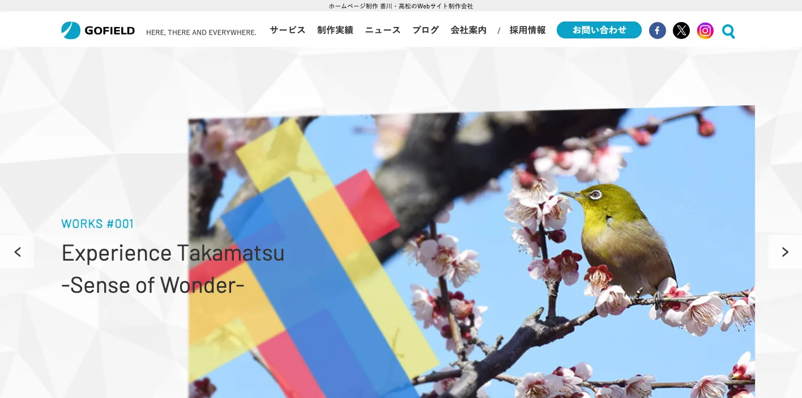
ゴーフィールドは、香川県高松市を拠点にホームページ制作、Webサイトリニューアル、Web運用、コンテンツ制作などを扱う会社です。地域企業、行政、観光、採用、BtoBのように、伝える相手が複数いる案件で候補になります。
LLMOでは、AIが会社やサービスを説明しやすいように、事業内容、対応範囲、実績、FAQ、写真、問い合わせ導線を整理する必要があります。高松市を中心に、香川県内の企業が「公式情報の置き場」を作り直したいときに向いています。
株式会社穴吹デザインプラス
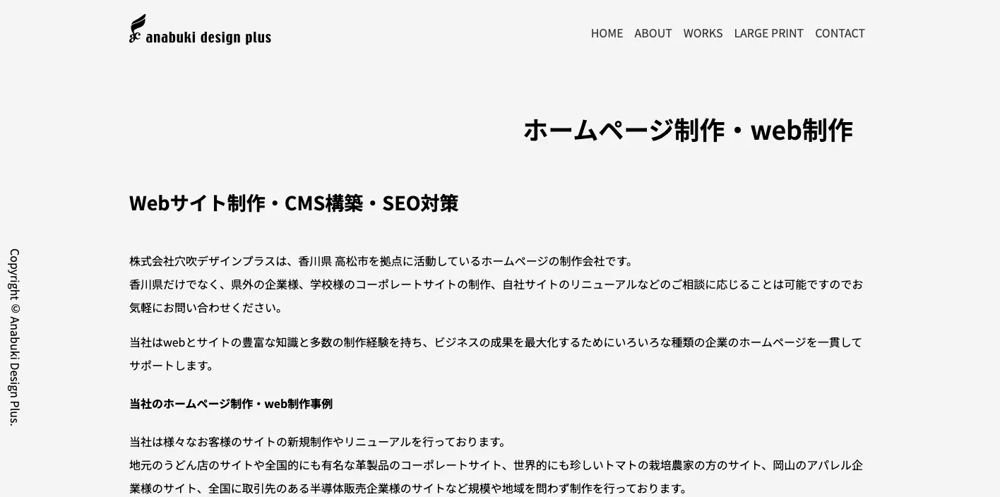
穴吹デザインプラスは、香川県高松市を拠点にホームページ制作、広告、グラフィック、ブランディングを扱う会社です。住宅、不動産、教育、地域サービスなど、見た目の印象と説明の分かりやすさを同時に整えたい会社に向いています。
香川県では、同じ高松商圏でも、生活者向けサービス、採用、法人向け営業で伝える内容が変わります。LLMOでは、デザインだけでなく「AIが読み取れる会社説明」「比較されやすい特徴」「よくある質問」までページに落とし込めるかが重要です。
合同会社デジポップ
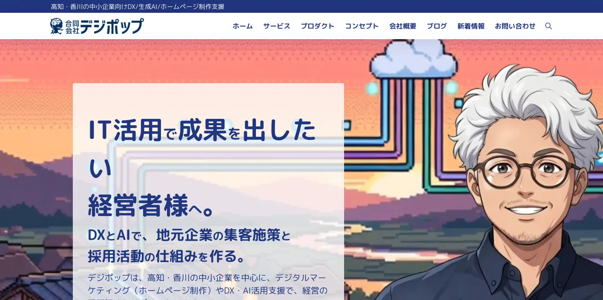
デジポップは、香川県でWeb制作やデザイン、ITまわりの支援を行う会社です。小規模事業者や地域サービスが、まず公式サイトを整えたいときに候補になります。
LLMOの最初の一歩は、大きな記事を量産することではありません。営業時間、料金、対応エリア、予約方法、施工事例、導入事例、よくある質問を正しく載せることです。高松市だけでなく、中讃・西讃の店舗やサービス業にも相性があります。
株式会社ヘルツ
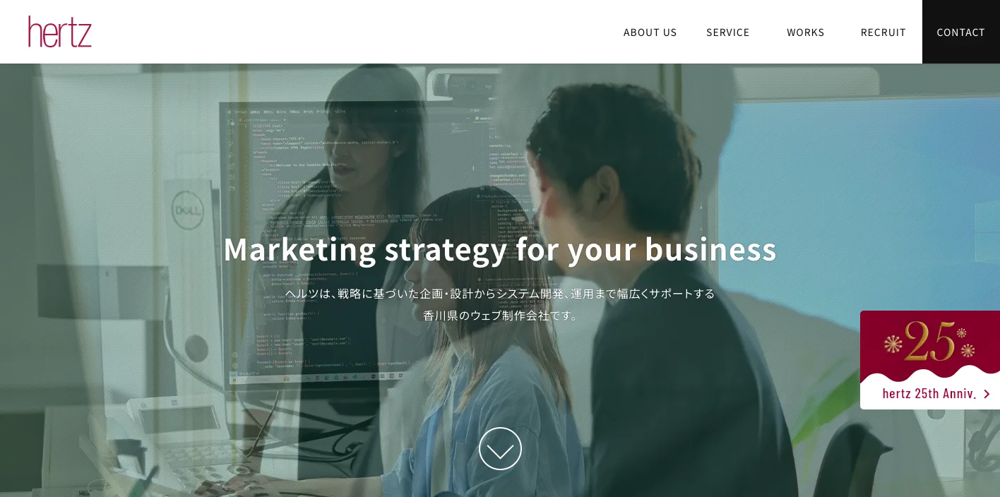
ヘルツは、高松市でWeb制作、システム開発、CMS、運用改善などを扱う会社です。単なる会社案内ではなく、予約、問い合わせ、会員管理、業務システムとWebをつなげたい場合に候補になります。
香川県のBtoB企業や医療福祉、教育、製造業では、サイトの見た目よりも「誰が、何を、どの条件で相談できるか」が重要です。LLMOでは、AIが誤解しない情報構造にするため、CMSやシステム側の更新しやすさも見ておく必要があります。
株式会社glow
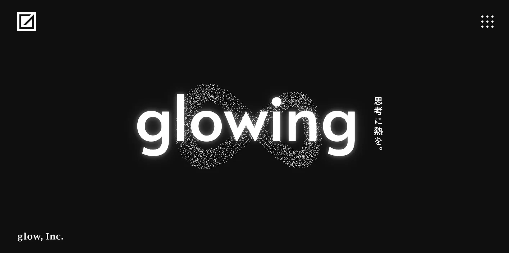
glowは、高松市を中心にWeb制作、デザイン、ブランディング、SNSやプロモーション支援を行う会社です。店舗、飲食、観光、地域サービスなど、写真やブランドの見せ方が問い合わせに直結する分野で候補になります。
香川県は、うどん、栗林公園、琴平、小豆島、直島、瀬戸内の島旅など、県外から比較される観光文脈が強い地域です。LLMOでは、雰囲気だけでなく、アクセス、所要時間、予約、雨の日対応、家族連れ、多言語、混雑時期を文章にしておくことが大切です。
株式会社チャージ
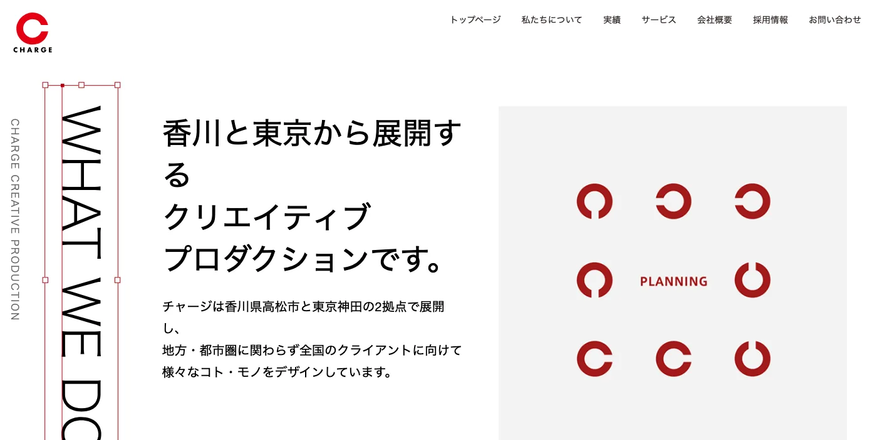
チャージは、高松市で広告、販促、Web制作、クリエイティブ支援を行う会社です。集客、採用、イベント、キャンペーンなど、短期の反応と中長期のブランドづくりを両方考えたい会社に向いています。
LLMOでは、広告で作った訴求と公式サイトの説明がずれていると、AIにもユーザーにも伝わりにくくなります。香川県内でキャンペーン、観光PR、採用PRを行う場合は、LP、会社サイト、FAQ、SNSの説明をそろえることが重要です。
モノデア株式会社
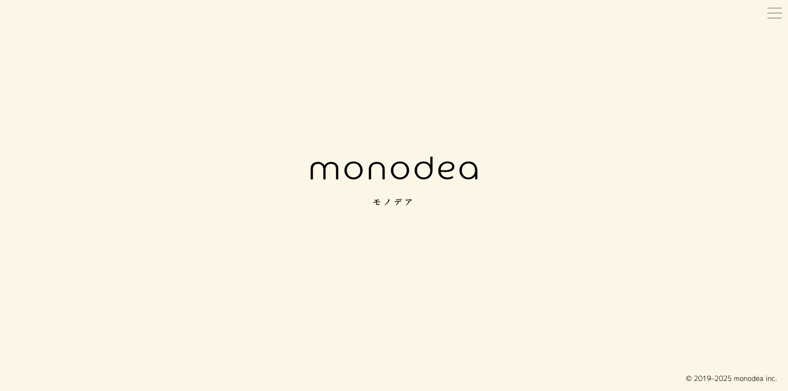
モノデアは、Web制作、UI/UX、システム、プロダクト開発に近い支援を行う会社です。サービスの仕組み、予約や申込の流れ、利用条件、管理画面など、サイトと業務が近い案件で候補になります。
香川県のスタートアップ、地域サービス、観光体験、医療福祉、教育サービスでは、単に「良いサービスです」と書くだけではAIに説明されにくいです。対象者、利用手順、料金、必要な持ち物、キャンセル条件、対応エリアを構造化して出すことが重要です。
株式会社ワンダーミックス・ムック
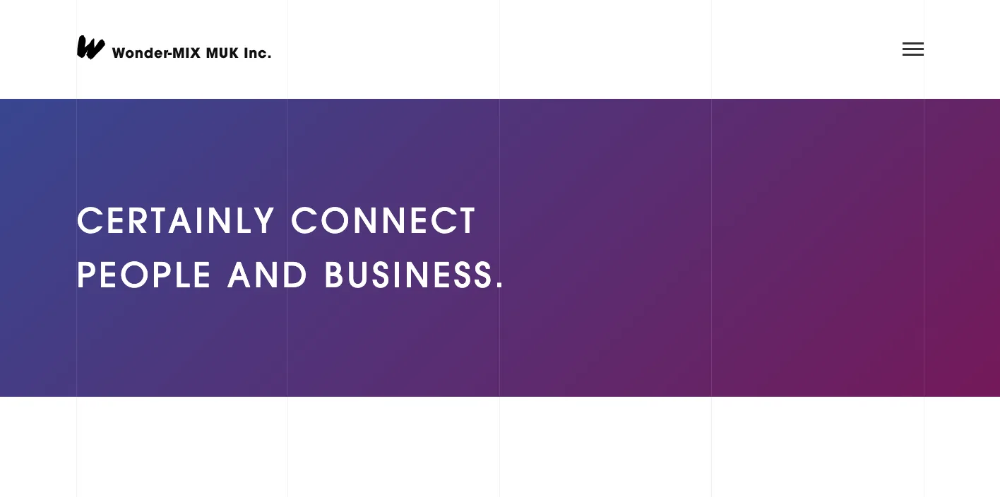
ワンダーミックス・ムックは、香川県高松市でWeb制作、CMS導入、SEO対策、システム開発、サイトメンテナンスなどを扱う会社です。既存サイトを直しながら、長く運用する体制を作りたい企業に向いています。
LLMOでは、1回きりの制作よりも、情報を更新し続ける仕組みが大切です。製造業なら設備や対応工程、観光業なら季節情報、店舗ならメニューや予約条件を更新できるか。CMSと運用保守を含めて相談したい場合に候補になります。
Y.K. Works
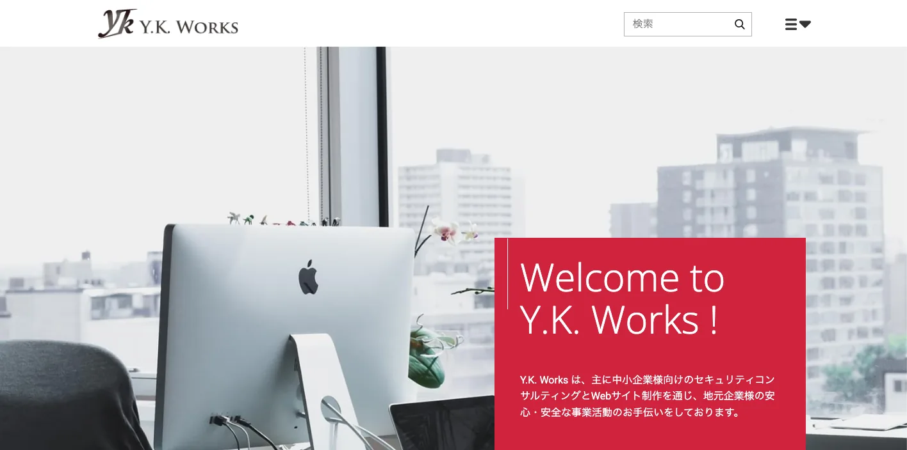
Y.K. Worksは、香川県でホームページ制作やデザインを行う制作パートナーです。小規模事業者、個人店、地域密着のサービスが、費用を抑えながら公式サイトを整えたいときに候補になります。
香川県では、地域名で探されるサービスが多くあります。高松市、丸亀市、坂出市、三豊市、観音寺市、小豆島、琴平など、実際に対応する地域を自然に明記し、料金、写真、事例、FAQをそろえるだけでもAIに拾われやすくなります。
株式会社よんでんメディアワークス
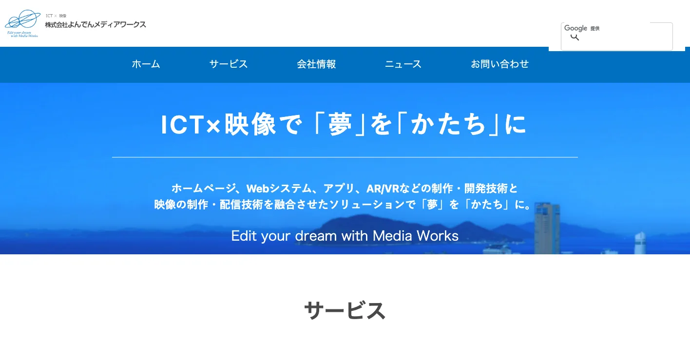
よんでんメディアワークスは、高松市を拠点にホームページ制作、Webシステム、サーバー、運用などを扱う会社です。企業サイト、サービスサイト、検定・申込系のWebシステムなど、堅めの運用基盤が必要な案件で候補になります。
LLMOは、公開ページの文章だけでなく、サイトの安定性、更新権限、フォーム、サーバー、セキュリティ、アクセシビリティとも関係します。公共性の高い情報、教育、インフラ、BtoB、広域向けサービスでは、運用基盤まで含めて確認したい会社です。
香川県のLLMO会社を比較する際のポイント
香川県でLLMO会社を比較するときは、会社の知名度よりも、自社の商圏に合う情報設計ができるかを見てください。高松市の生活商圏、丸亀・坂出の産業集積、小豆島・直島・琴平の観光、三豊・観音寺の地域事業では、AIに聞かれる内容が違います。
比較の順番は、まず地域、次に業種、最後に施策です。たとえば「香川 ホームページ制作」で探すと制作会社の一覧にはたどり着けますが、自社に必要なのが採用ページ改善なのか、観光FAQなのか、製造業の技術ページなのか、予約導線なのかまでは分かりません。LLMO会社には、その切り分けから相談できるかを確認してください。
高松市の商圏は「生活者向け」と「法人向け」を分ける
高松市は、県庁所在地として行政、医療、士業、教育、不動産、店舗、採用、BtoBが集まりやすい地域です。LLMOでは、同じ会社サイト内でも、生活者向けの説明と法人向けの説明を混ぜすぎないことが重要です。
たとえば、クリニックなら診療内容、予約、駐車場、支払い、紹介状、初診の流れ。BtoB企業なら対応業種、導入実績、対応エリア、契約形態、保守体制。AIに聞かれる質問を用途別に分けて、ページやFAQに落とし込める会社を選びましょう。
丸亀・坂出・宇多津は製造業、港湾、物流の説明力を見る
中讃エリアでは、製造業、物流、港湾、建設、設備、卸売のように、専門的な業務内容を正しく説明する力が必要です。香川県の産業成長戦略でも、県内企業の研究開発力、ものづくり基盤技術、生産性向上、マーケティング力の強化が課題として整理されています。
この領域でLLMOを進めるなら、単に「品質に自信があります」と書くのでは足りません。加工範囲、設備、素材、検査体制、ロット、納期、対応地域、資格、取引実績を構造化し、AIにも取引先にも伝わる形にする必要があります。
小豆島・直島・琴平は観光客の質問を先回りする
観光業では、写真や雰囲気だけでなく、移動、予約、所要時間、営業時間、混雑、雨天、家族連れ、外国語、フェリー、駐車場、キャンセル条件まで説明できるかが重要です。香川県の観光消費金額は大きく、県外客の判断材料になる情報を公式サイトに出す価値があります。
特に小豆島や直島は、島しょ部ならではの移動条件があります。AI検索で「日帰りできるか」「船が止まったらどうなるか」「子ども連れでも行けるか」と聞かれたとき、公式情報が少ないと別サイトの古い情報で回答される可能性があります。
三豊・観音寺は地域ブランドと採用情報を同時に整える
西讃エリアでは、食品、製造、観光、地域ブランド、採用の情報を分けて整理する必要があります。商品やサービスの魅力だけでなく、会社として何をしているか、どこで働けるか、どんな設備や取引先があるかまでAIに伝わる状態が理想です。
地域企業の場合、採用ページが薄い、実績が古い、写真が少ない、料金や対応範囲が見えないという問題がよくあります。LLMO会社を選ぶときは、記事作成だけでなく、会社概要、採用、事例、FAQ、地域名の整理まで見てくれるか確認してください。
DX支援や補助金の話をWeb更新体制に接続できるかを見る
香川県では、かがわDX Labのような官民共創の取り組みや、中小企業向けのデジタル化推進支援事業が用意されています。LLMOも、結局はデジタル化の一部です。公式サイトを作って終わりではなく、社内で更新できる仕組みにする必要があります。
生成AI、RPA、IoT、クラウドツールの導入と同じで、情報更新の担当、承認フロー、写真の追加、FAQの改善、事例の蓄積がないと、AI検索に引用される材料は増えません。LLMO会社には、制作物だけでなく運用方法まで確認しましょう。
岡山・徳島・愛媛・関西からの比較も想定する
香川県の企業や観光施設は、県内だけで比較されるとは限りません。岡山から瀬戸大橋を渡って来る人、徳島・愛媛と四国旅行を組む人、関西から日帰りや一泊で調べる人、四国全体で取引先を探す企業もいます。
そのため、LLMOでは「香川県内では有名だから分かるはず」という前提を捨てる必要があります。交通、納品範囲、対応エリア、県外からの相談可否、オンライン対応、出張対応、観光なら最寄り港や駅まで含めて、県外の人でも迷わない説明を用意してください。
香川県のLLMO会社に依頼する費用相場
LLMOの費用は、単純な記事制作費ではありません。AIに引用されやすい情報を作るには、現状調査、競合調査、構造化データ、FAQ、サービスページ改善、記事制作、更新運用、効果測定が必要です。香川県の場合は、観光、製造業、地域店舗、BtoBで必要な作業量が変わります。
予算を組むときは、初期費用と月額費用を分けて考えると分かりやすいです。初期費用は、AI検索での見え方調査、既存サイトの問題整理、重要ページの修正、FAQや構造化データの追加に使います。月額費用は、AI回答の変化確認、事例追加、季節情報の更新、採用情報の修正、問い合わせ内容からのFAQ追加に使います。
最初から全部を外注する必要はありません。小規模事業者なら、まず会社概要、主要サービス、料金、FAQ、問い合わせ導線だけを直し、次に事例や採用ページを追加する形で十分です。観光業や製造業のように説明量が多い業種は、最初の取材と情報整理に費用を寄せたほうが後から使い回しやすくなります。
| 依頼内容 | 費用目安 | 香川県での考え方 |
|---|---|---|
| 初期診断・方針設計 | 5万〜20万円 | AI検索で自社名、サービス名、地域名がどう説明されるかを確認する。高松、丸亀、坂出、三豊、小豆島など商圏別に見ると精度が上がる。 |
| 既存サイト改善 | 20万〜80万円 | 会社概要、サービス、料金、FAQ、事例、採用、問い合わせ導線を整える。小規模店舗なら優先ページを絞る。 |
| 記事・FAQ制作 | 1本5万〜20万円 | 観光、製造、医療福祉、士業、教育、店舗など、AIに聞かれる質問ごとに作る。量よりも一次情報の正確さが大切。 |
| 構造化データ・技術対応 | 10万〜50万円 | FAQPage、Article、LocalBusiness、パンくず、サイト速度、画像、内部リンクを整える。CMSやサーバー条件で費用が変わる。 |
| 月額運用 | 5万〜30万円/月 | AI回答の変化、検索流入、問い合わせ、FAQ追加、事例更新を継続する。観光や採用は季節更新も必要。 |
小規模店舗は「最低限の公式情報」から始める
飲食店、治療院、美容、士業、教室、宿泊施設などは、いきなり高額なLLMO運用を始めるより、公式サイトの基本情報を整えるほうが先です。営業時間、所在地、駐車場、予約方法、料金、写真、よくある質問、対応できないことを明記するだけでも、AIが説明しやすくなります。
費用を抑えるなら、初期診断と主要ページ改善に絞るのが現実的です。高松市内の店舗なら競合が多いため比較軸を明確にし、島しょ部や観光地ならアクセス・季節・予約条件を厚くしましょう。
製造業・BtoBは専門情報の整理に費用をかける
製造業やBtoB企業では、表面的なSEO記事よりも、専門情報の整理が重要です。設備一覧、加工範囲、品質管理、対応ロット、材料、納期、対応地域、取引実績、図面対応、問い合わせ前に必要な情報をまとめる必要があります。
この場合は、取材、専門用語の整理、写真撮影、図解、事例制作が必要になるため、費用は高くなりやすいです。ただし、AI検索だけでなく営業資料、展示会、採用、既存顧客への説明にも使えるため、投資の使い回しができます。
観光業は季節更新と多言語対応を見込む
香川県の観光業では、1回作って終わりのページでは足りません。瀬戸内の島旅、フェリー、アートイベント、うどん巡り、琴平、栗林公園などは、季節、交通、営業時間、混雑、予約条件が変わります。
観光系のLLMOでは、月額運用でFAQやイベント情報を更新する費用を見込んだほうが安全です。外国人観光客を意識する場合は、多言語ページや英語FAQの整備も検討してください。
補助金やDX支援は「Web制作費の穴埋め」ではなく体制作りに使う
香川県のデジタル化推進支援事業では、ITコーディネータ派遣や個別コンサルティングなど、社内のデジタル化を進める支援が用意されています。LLMOを外注する場合も、外注先任せにせず、自社で情報を更新する体制づくりが重要です。
LLMOの費用対効果は、記事本数よりも「正しい情報を更新し続けられるか」で決まります。会社選びでは、見積もりの安さだけでなく、運用担当者への引き継ぎ、更新マニュアル、効果測定まで含まれているかを確認してください。
香川県のLLMO会社に関するよくある質問
香川県内の会社に依頼したほうがいいですか？
対面取材、写真撮影、観光地や店舗の現地確認、地域の商慣習を拾いたい場合は、県内会社に依頼する価値があります。一方で、AI検索の引用状況調査、構造化データ、FAQ設計、コンテンツ改善は、県外のLLMO専門会社と組み合わせても問題ありません。
高松市と丸亀市・坂出市ではLLMOの進め方は変わりますか？
変わります。高松市は行政、医療、教育、士業、店舗、採用、BtoBが混ざりやすく、丸亀市・坂出市・宇多津町は製造業、物流、港湾、地域企業の説明が重要になりやすいです。市町ごとにAIに聞かれる質問を分けてください。
観光業や飲食店でもLLMOは必要ですか？
必要です。うどん、栗林公園、琴平、小豆島、直島、瀬戸内の島旅、宿泊、体験観光では、行き方、所要時間、営業時間、予約、駐車場、混雑、雨の日、多言語対応などがAIに聞かれます。公式サイトに一次情報を置くほど、AI回答の材料になりやすくなります。
製造業やBtoB企業でもLLMOは効果がありますか？
あります。香川県では、ものづくり、食品、物流、設備、建設、技術サービスなど、専門性の高い情報を探す取引先や採用候補者がいます。設備、対応工程、品質管理、納期、対応エリア、事例を整理すると、AIにも人にも伝わりやすくなります。
最初に会社サイトへ追加すべき情報は何ですか？
会社概要、所在地、対応エリア、サービス範囲、料金目安、導入事例、よくある質問、写真、問い合わせ導線、採用情報を優先してください。高松市、丸亀市、坂出市、三豊市、観音寺市、小豆島、直島、琴平など、実際に対応する地域名も自然に明記しましょう。
香川県のDX支援や補助金情報も確認すべきですか？
確認したほうがいいです。香川県では、かがわDX Labや中小企業向けのデジタル化推進支援事業など、デジタル活用を後押しする取り組みがあります。LLMOをWebだけの話にせず、社内更新体制や生成AI活用まで含める場合に役立ちます。
香川県でLLMO会社を選ぶなら、高松・中讃・西讃・島しょ部を分けましょう
香川県でLLMO会社を選ぶときは、県内を一つの商圏として雑に扱わないことが大切です。高松市は生活者向けと法人向けの情報整理、中讃は製造業・物流・港湾、西讃は地域ブランドと採用、島しょ部や琴平は観光・移動・予約条件が重要になります。
最初にやるべきことは、自社がAIにどう説明されたいかを決めることです。会社名で聞かれたとき、地域名で探されたとき、比較されたとき、料金を聞かれたとき、採用候補者が調べたときに、公式サイトが答えを持っている状態を作りましょう。
特に香川県では、県外からの見られ方も無視できません。岡山・徳島・愛媛・関西から比較される企業、瀬戸内観光で調べられる施設、移住や採用で会社名を調べられる事業者は、県内向けの言葉だけでは足りません。公式サイトには、県外の人にも通じる説明、アクセス、取引条件、相談前に必要な情報を置いてください。
依頼先を決めるときは、見積書の中身も確認しましょう。「記事制作一式」だけではなく、どのページを直すのか、誰に取材するのか、公開後に何を測るのか、何カ月後にどの情報を追加するのかまで書かれているほうが安全です。LLMOは短距離走ではなく、公式情報を積み上げる運用です。
香川県のLLMOは、地域名、業種、観光、製造、採用、DXを分けて設計するほど精度が上がります。会社選びでは、制作実績の見た目だけでなく、取材力、構造化データ、FAQ設計、CMS運用、効果測定、社内引き継ぎまで確認してください。迷う場合は、小さな診断から始めて、重要ページを順番に直す進め方が安全です。